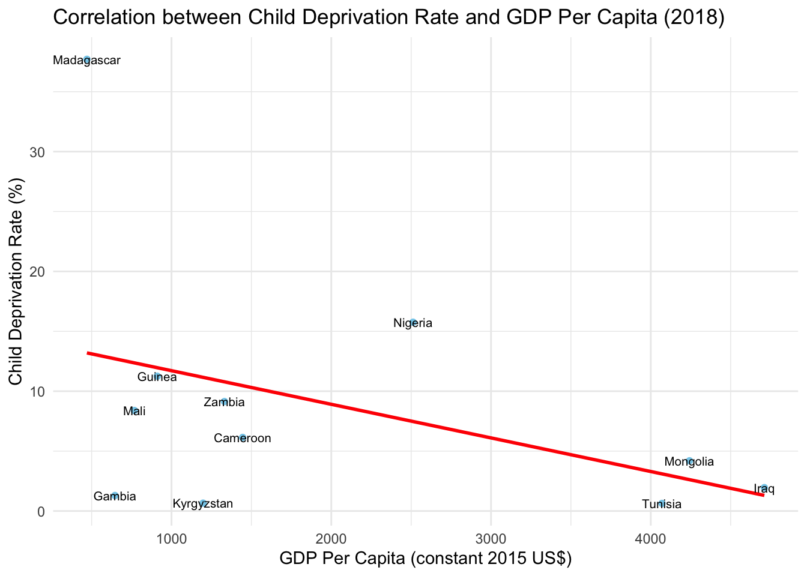

Growing Hope
Understanding Child Growth & HIV Awareness Worldwide

 |
 |
| MISSION | VISION |
| XXXXX Test |
Join us in making a significant impact on the lives of children around the world by supporting UNICEF’s mission to provide lifesaving nutrition, water, education, and emergency relief.
Your donation can help save lives, defend rights, and fulfill the promise of a better future for children in need.
Together, we can create a brighter, healthier, and more equitable world for all children. (click to donate)

Introduction üìÑ
Child well-being is a crucial aspect of societal development, reflecting the health, education, and overall quality of life of our future generations. The report will leverage data analysis and visualization techniques to elucidate the challenges faced by children worldwide, focusing on two specific indicators: the percentage of children suffering from at least two deprivations under homogeneous severe standards, and children with height-for-age and weight-for-height below -2 standard deviations.
The datasets utilized in this report include unicef_indicator_1.csv and unicef_indicator_2.csv, which provide detailed information on these indicators, while unicef_metadata.csv offers additional contextual data about countries, such as GDP, inflation, and life expectancy at birth.
This report aims to underscore the importance of addressing these issues and advocate for actionable interventions to improve the lives of children globally.
Understanding Child Deprivation: üì£
Measured by the percentage of children suffering from at least two deprivations under homogeneous severe standards. This indicator provides insights into the extent of multidimensional poverty experienced by children in different countries.
From population trends to economic indicators and public health statistics, this report offers a comprehensive view into the evolving dynamics of some nations worldwide, highlighting critical socio-economic factors such as the average child deprivation rate, GDP per capita, average life expectancy, and military expenditure. These metrics provide valuable insights into the well-being and prosperity of nations, guiding policymakers and stakeholders in their efforts to address the diverse needs of their populations and foster sustainable development.
Top 10 Countries with the Highest Child Deprivation Rates üö©
Let’s delve into the socio-economic landscape of the world’s leading nations as we examine the average child deprivation rates across the top 10 countries.
Geographical Patterns: The countries listed are primarily from Africa, with the exception of Cambodia. This indicates that child deprivation is particularly prevalent in African nations within the context of this graph.
Severity Variation: There is variation in the severity of child deprivation among these countries, with Niger and Chad experiencing the highest rates, suggesting that these countries might be facing more severe or more widespread challenges related to child well-being.
Need for Interventions: High child deprivation rates imply that there are substantial numbers of children who do not have access to basic services and needs, pointing to a need for increased social and economic interventions.
Data for Action: Such data is crucial for policymakers, non-governmental organizations, and international bodies to understand where to focus their efforts and resources to make effective changes.
This two graphs in summary represent a comparative analysis of the top 10 countries with the highest child deprivation rates. By highlighting these countries and examining their average GDP per capita and inflation rate, we gain valuable insights into the socio-economic challenges they face.
By highlighting countries with high child deprivation rates and potentially struggling economies, UNICEF can prioritize and tailor its interventions, allocating resources more efficiently to the areas in greatest need.
Understanding the economic context of these nations is crucial for policymakers, organizations, and stakeholders seeking to develop targeted interventions and support systems to alleviate child deprivation and promote sustainable development.
Temporal Trends: Economic Growth and Child Welfare Over Time ⌛️
In the following visual representations, we explore the progression of two distinct yet telling metrics over time.
The first graph tracks the average GDP per capita, reflecting economic prosperity through the decades.
The second graph offers a closer look at the volatility in child welfare, as indicated by the average child deprivation rate over a span of recent years.
Together, these trends paint a picture of economic and social dynamics at play over varying timescales.
This first graph chronologically charts the economic trajectory of nations from 1960 to beyond 2020. It reflects an ascending trend in the average wealth generated per person, adjusted to 2015’s dollar value to account for inflation. The overall direction indicates a long-term economic expansion. Understanding this trend is vital for contextualizing the economic backdrop against which child deprivation is set, as it may correlate with the availability of resources for social programs, including those aimed at mitigating child poverty and deprivation.

This second graph offers a narrower temporal window, spanning from 2012 to 2018, and captures the percentage of children experiencing deprivation in fundamental needs such as nutrition, education, and healthcare. Unlike the gradual rise in GDP per capita, this graph presents a downward trajectory. This suggests an improvement in conditions related to child deprivation, with a general decrease in the rate at which children are experiencing deprivation in critical areas of well-being. While there are fluctuations within this period, the end point of the graph indicates a lower rate of child deprivation than the starting point, which could be interpreted as a positive outcome of the measures taken during these years.
Over the selected time frame, conditions for children have improved on average.
Summary: The trend analysis of GDP and average child deprivation rate over time reveals insightful patterns. The line chart depicting the evolution of average GDP per capita shows a consistent upward trend, indicating overall economic growth across the years. Conversely, the line chart illustrating the evolution of the average child deprivation rate demonstrates a promising downward trajectory, suggesting a positive improvement in socio-economic conditions. This juxtaposition between the upward trend in GDP and the downward trend in child deprivation underscores the importance of socio-economic development initiatives aimed at reducing poverty and enhancing the well-being of children worldwide.
Comparative Analysis of Child Deprivation Rates by Gender ⚤


The gender-based observation of child deprivation rate reveals a striking similarity in the average deprivation rates between genders, with values very close to each other. This suggests that addressing child deprivation should not be contingent upon gender-specific interventions. Instead, a holistic approach that targets the root causes of deprivation, irrespective of gender, is essential to ensure equitable outcomes for all children. By focusing on comprehensive socio-economic policies and interventions, we can work towards creating a more inclusive and supportive environment for children worldwide.
Socioeconomic Indicators and Correlation with Child Deprivation üìâ


The first graph suggests an inverse relationship between GDP per capita and child deprivation rates—higher GDP per capita is be associated with lower child deprivation.
The second graph shows a similar inverse relationship, where higher life expectancy at birth could correlate with lower rates of child deprivation.
These analysis underscore potential connections between a country’s economic status, health outcomes, and the well-being of its children. Such insights are crucial for policymakers and researchers aiming to address child deprivation through multifaceted socio-economic development.
We observe a clear negative correlation between child deprivation rate and GDP per capita and Life expectancy at birth across countries. As child deprivation rate increases, GDP per capita and Life expectancy tend to decrease. This negative correlation is in line with expectations, as countries with higher levels of child deprivation often face greater economic challenges, leading to lower GDP per capita.
Percentage Of Children Suffering At Least Two Deprivation Across Countries üåç
The heatmap illustrates the distribution and percentage of children suffering from at least two deprivations across different countries. Warmer colors indicate higher levels of deprivation, while cooler colors represent lower levels. This visualization allows us to discern geographical patterns and disparities in child well-being globally. Countries with warmer shades may require more attention and targeted interventions to address the underlying causes of deprivation and improve child welfare than those with cooler shades.
Understanding Child Stunting and Wasting üìä
Measured by the percentage of children with height-for-age and weight-for-height below -2 standard deviations. This indicator highlights severe malnutrition.
Let’s identify the countries facing the most significant challenges in child nutrition by looking at the top 10 countries with the highest average rates of child stunting and wasting.
This chart reveals the countries where children are most affected by severe malnutrition, indicated by both stunting (low height for age) and wasting (low weight for height). High rates in these countries point to critical needs for nutritional support, healthcare interventions, and improvements in food security and sanitation. Addressing stunting and wasting is crucial for long-term child development and survival.
In light of all the findings of this Report…
UNICEF has sets a series of ambitious goals aimed at addressing critical aspects of child and adolescent health. From shielding children against the pervasive threat of malnutrition to providing vital resources for combating life-threatening conditions. These milestones represent a roadmap for UNICEF’s dedicated efforts over the next few years.
Each number reflects not just a statistic, but a step towards a healthier future for the most vulnerable segments of the population.
KEY PLANNED RESULTS FOR 2025 

Conclusion
As we conclude this report, several key findings emerge from our exploration of global child well-being indicators. Firstly, we observed significant variations in child deprivation rates across countries, highlighting disparities in socio-economic conditions that impact children’s quality of life. Additionally, the negative correlation between child deprivation rates, GDP per capita and life expectancy at birth underscores the economic challenges faced by countries with higher deprivation levels.
Furthermore, our analysis revealed a concerning correlation between child deprivation rates and nutritional indicators, such as the percentage of children suffering from stunting and wasting. This highlights the complex interplay between socio-economic factors and health outcomes, emphasizing the need for holistic approaches to address child well-being.
Solutions
Adressing the challenges highlighted in this report requires multifaceted solutions.
Policy interventions aimed at reducing poverty, improving access to education and healthcare, and promoting gender equality are crucial steps towards alleviating child deprivation. Additionally, targeted nutritional programs and investments in social infrastructure can help mitigate the impact of socio-economic disparities on children’s health and well-being.
While the findings presented here paint a sobering picture of global child well-being, they also underscore the importance of concerted efforts to address these challenges. By leveraging data-driven insights and implementing evidence-based interventions, we can work towards a future where every child has the opportunity to thrive and reach their full potential.
Follow us…
Join our community and stay updated with the latest news, events, and ways you can make a difference.
Follow us on social media to see real-time updates and stories of how your support is changing children’s lives around the world. Connect with us today on Facebook, X, Instagram, and LinkedIn to help advocate for children’s rights and wellbeing.
Together, we can build a better future for every child. (click on the apps to follow)
 |